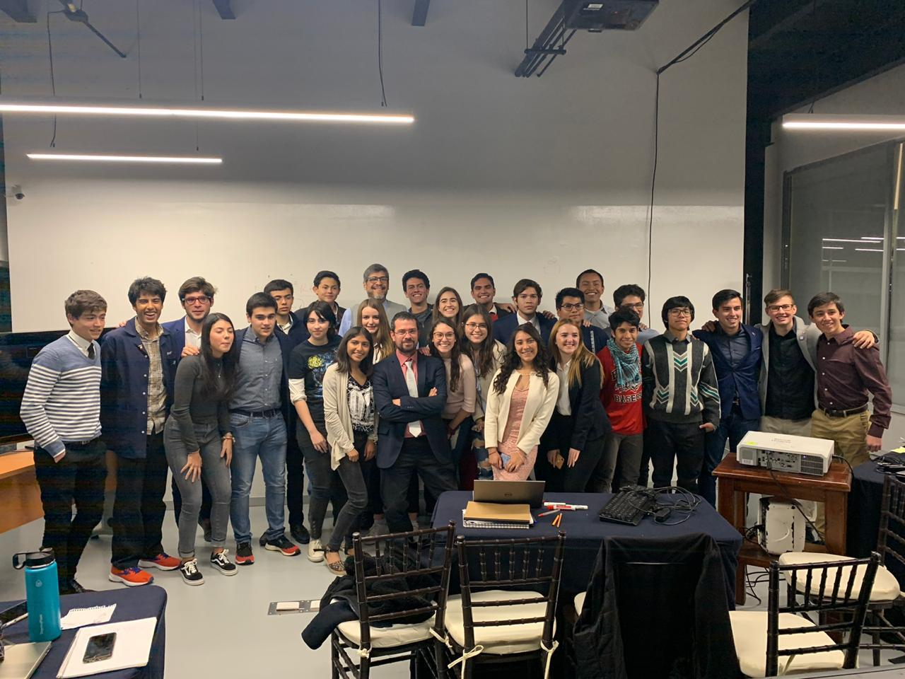
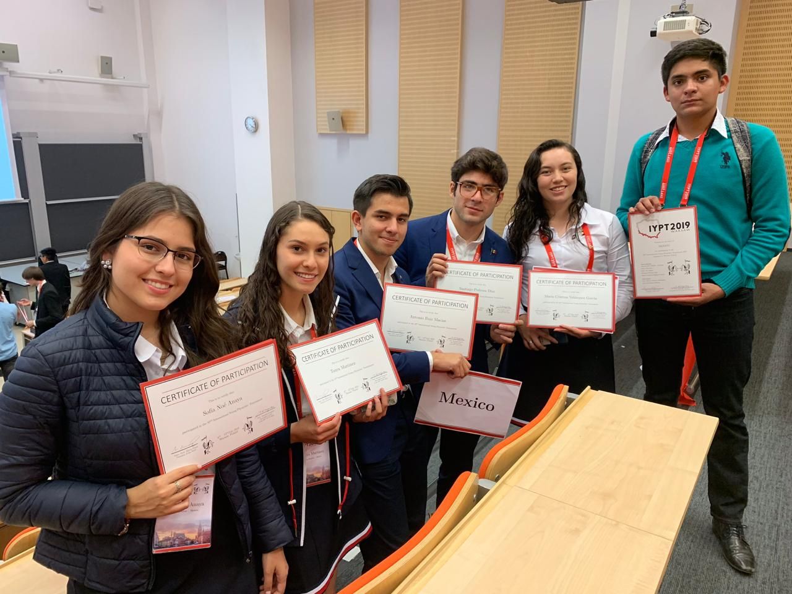

Este año fue algo difícil ya que se presentó la pandemia causada por el COVID-19. Es por eso que el equipo de México no irá al torneo IYPT, pero eso no significa que sea un año perdido para los participantes del MYPT ya que se celebró una pelea amistosa con los equipos de Grecia y Chequia.
El torneo del 2020 fue uno para no olvidar ya que esta segunda entrega contó con más de dos estados de México participando en él. Además de esto se tuvo la ayuda de un alumno del MIT el cual prestó su ayuda para la mejora en los problemas que se tenían.
El IYPT 2019 fue el regreso de México al torneo internacional después de varios años. La cede de este torneo fue en Varsovia, Polonia. Y fue el lugar donde México aprendió mucho y consiguió experiencia muy valiosa para los años que siguen del torneo.
El torneo del 2019 fue la primera edición del MYPT actual. México había participado antes, aunque, a través de una escuela en la Ciudad de México. Y fue gracias a la colaboración con el MIT y la Universidad Panamericana que México tuvo esta primera edición del MYPT. En la imagen se puede ver una lucha de Física.